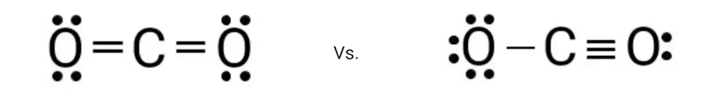
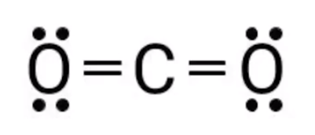

What if a molecule can have multiple valid Lewis diagrams?
{width="7.895833333333333in" height="1.1666666666666667in"}
How to tell which one is correct?
<!-- -->
What is formal charge?
The hypothetical charge of an atom in a Lewis structure if, hypothetically, all atoms had the same electronegativity
To calculate the formal charge, electrons should first be assigned to each atom on the diagram
An unshared (free) electron (dots) is fully assigned to the atom it belongs to
An atom gets half of the atom it shares in bonds
{width="2.78125in" height="1.1875in"}
The oxygen atoms get 4 + (4 / 2) = 6 electrons each
The carbon atom gets 8 / 2 = 4 electrons
Then, the number of assigned electrons gets subtracted from the number of valence electrons of that atom
Oxygen: 6 - 6 = 0, formal charge = 0
Carbon: 4 - 4 = 0, formal charge = 0
<!-- -->
The dominant Lewis structure is the one with:
The minimum number of nonzero formal charges
If nonzero formal charges remain, the negative charge should be assigned to the most electronegative atom
The sum of all formal charges in the molecule should add to the charge of the chemical species (0 if neutral, +1 for NH4^+^...)